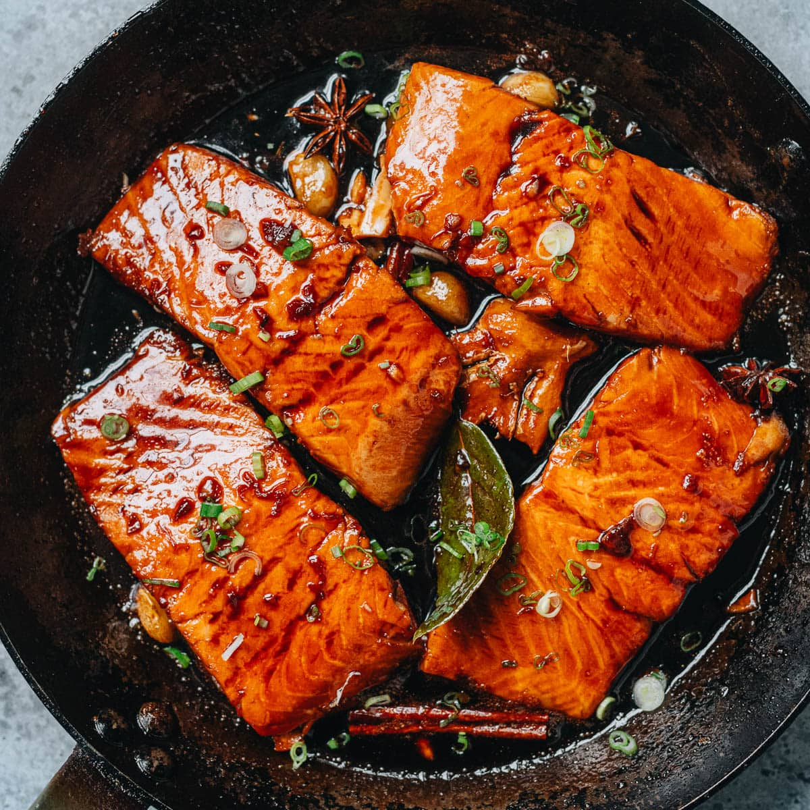
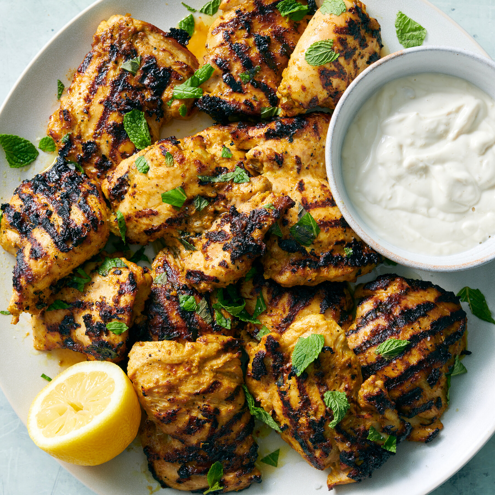
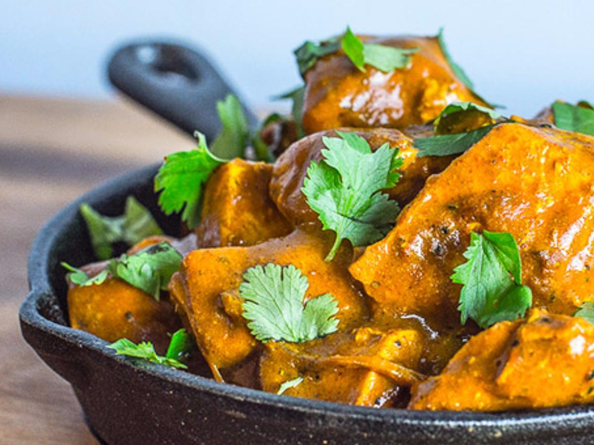
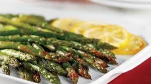

 Marin Saffron Honey Soy Glazed Salmon (4.7) stockpot Pan-searing allergies Gluten-Free heat Intermediate
 Luna Thyme Grilled Yogurt Lime Chicken (4.5) stockpot Grilling allergies Gluten-Free heat Intermediate
 Cyrus Brine Spicy Coconut Curry Chicken (4.6) stockpot Stovetop allergies Gluten-Free heat Intermediate
 Seraphina “Sera” Soufflé Lemon Garlic Asparagus (4.1) stockpot Sautéing allergies Vegan heat Easy